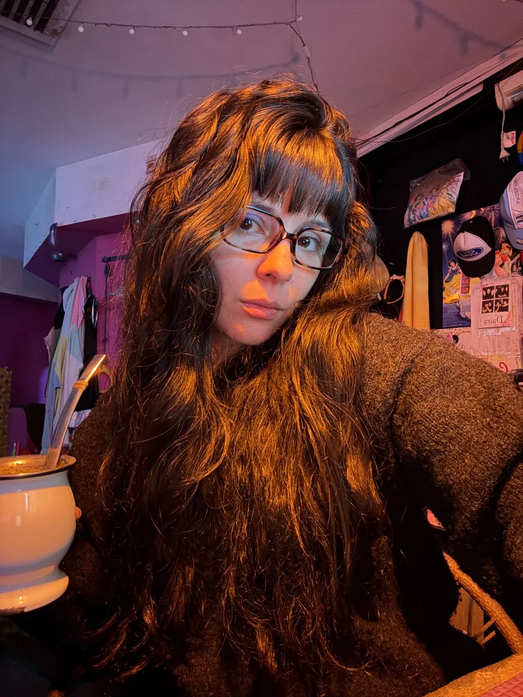
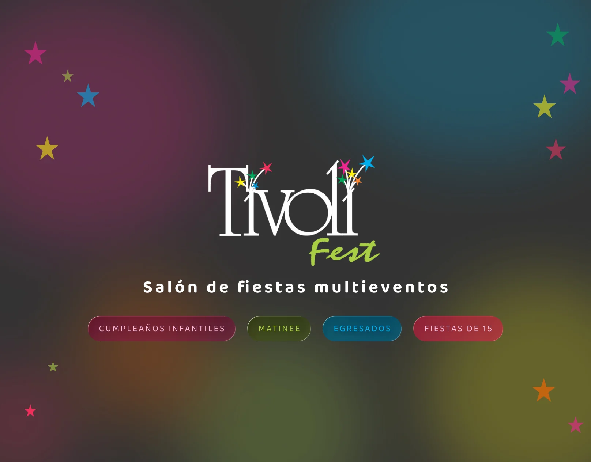
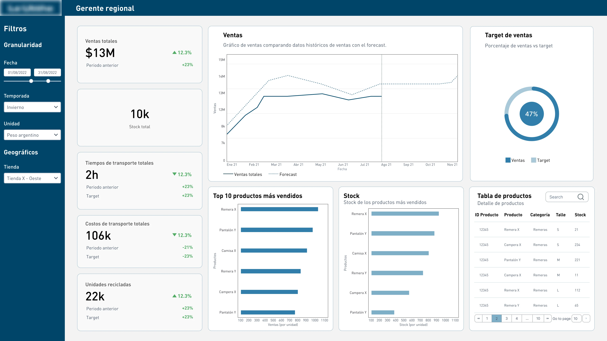
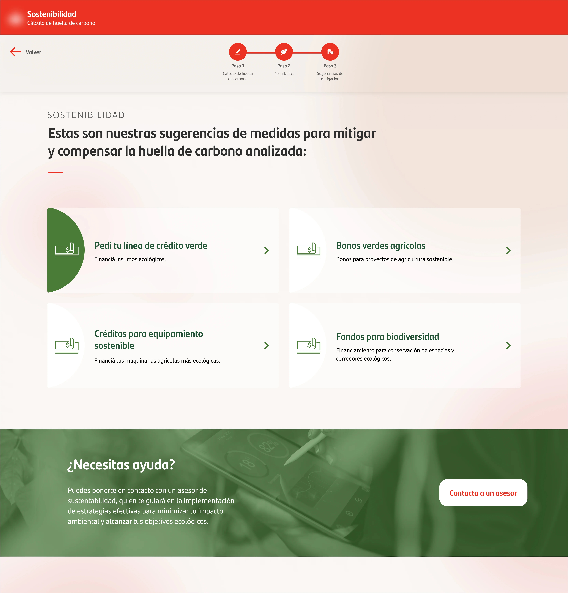
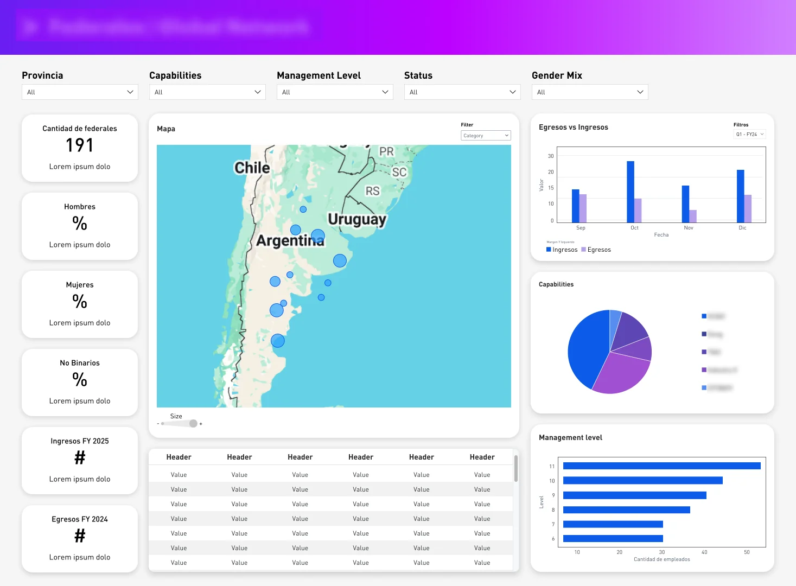
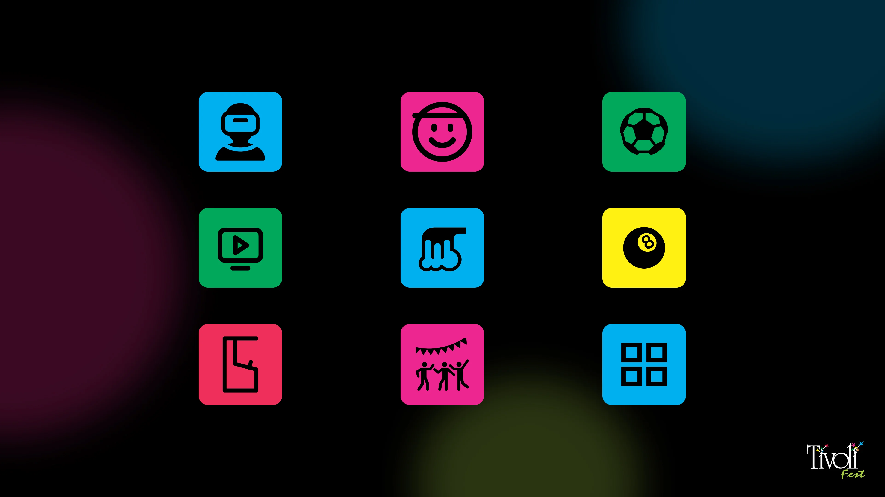
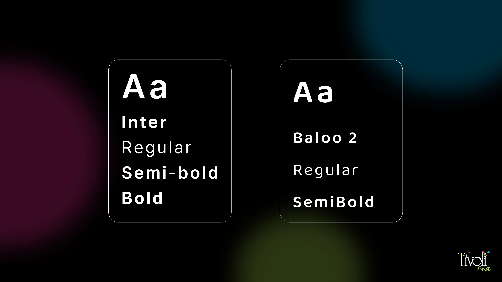
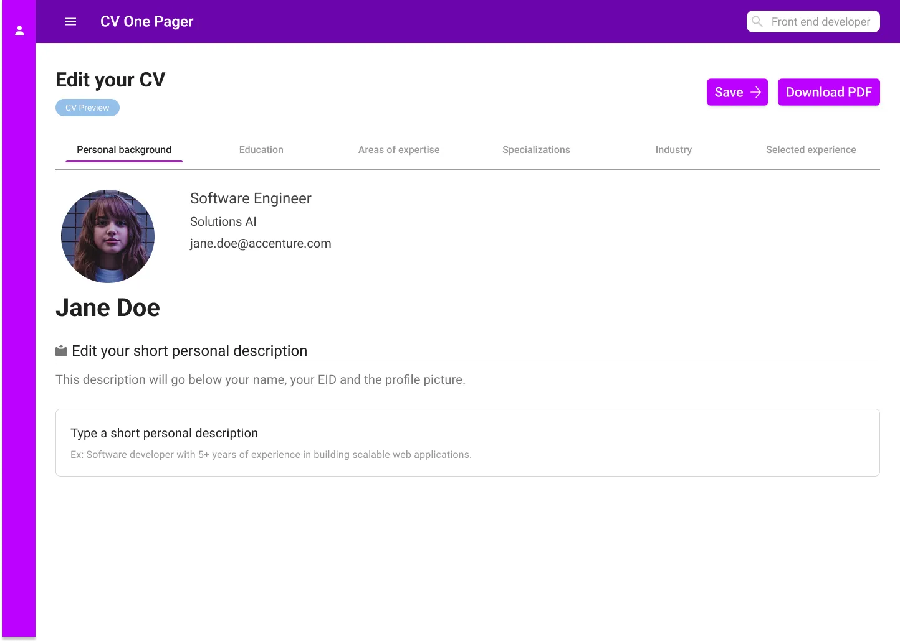

Hi! I'm Victoria
Front end developer and UX/UI designer with over 4 years of experience, working with Figma, React and Angular. Learning n8n.
$ fastfetch
- OS
- Arch Linux
- Role
- Front end + UX/UI
- From
- Argentina
- Music
- Steely Dan and mathcore child
- Games
- Disco Elysium, Persona
- Cats
- 3, all different colors. Ask your questions
- Colors
- brown, black
$
Technologies
I work with Figma
- Figma
- Angular
- React
- Vite
- CSS
- HTML
- TypeScript
- JavaScript
- Python
- Express
- Node.js
- SQL
- Sequelize
- EJS
- Tailwind CSS
- Bash
Projects

Tivoli Fest
Website for the event hall.

UX Case Study
UX research and design for an ecommerce platform with analytics.

Sustainability
Sustainability design project for an external client.

Federals dashboard
Dashboard design for an internal Federals project.
Design works



About me
I design and build intuitive interfaces, applications and static web pages, so I care about how something looks and how it behaves once it's in someone's hands. I also have experience both with multidisciplinary teams and as a freelancer. I use Figma for design and Angular, React, or Vite for front-end development.
Outside work I'm on Arch Linux, I'm very passionate about music, RPGs and cooking.
Résumé
Available in English and Spanish, as PDF.
Open my CV